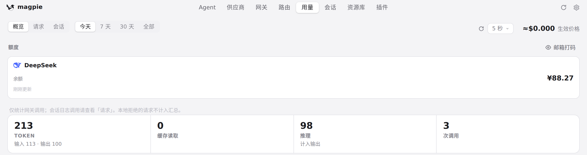
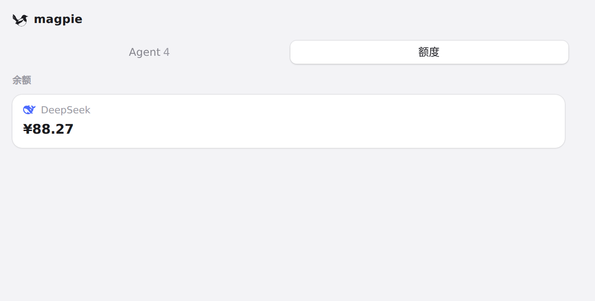

#511 界面预览
commit 05ff9c4 · 回到 PR · 这个 diff 让 Claude 的 /usage 读不到额度时保留上一次带时间戳的快照：面板的额度卡片和供应商账号行现在会把「截至…（缓存）」直接显示出来，已过的重置时间显示为「重置时间已过」，有窗口过期时补充说明当前额度未知，读到的额度更新后这些标记消失。
红线是鼠标走过的轨迹，红色圆环是一次点击；底部文字是这一步在做什么。空格暂停，← → 逐段查看。

用量页的额度区 · 用量页的额度区（沙盒中只有 DeepSeek，无 Claude 订阅账号）
用量页的额度区 · 刷新后的额度区

面板的额度页签 · 面板额度页签里的额度卡片